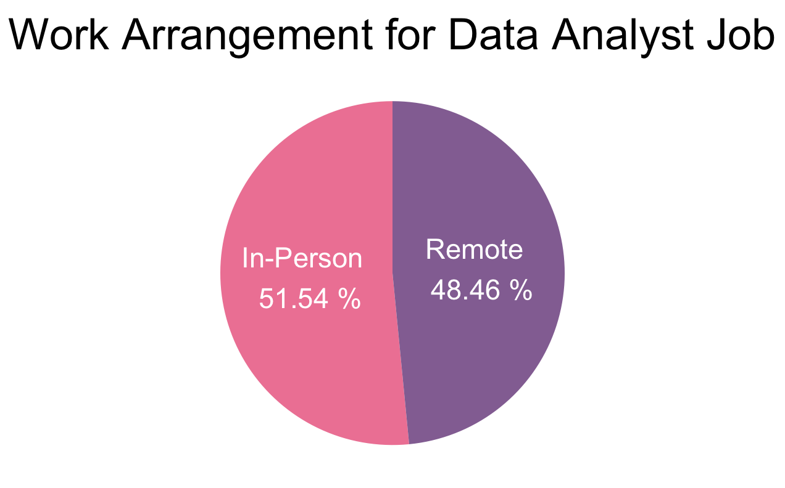

United States (U.S.) Data Analyst Job Postings Analysis (2022 – 2024)
Nature
Data Analytics
Types
Data Cleaning
Exploratory Data Analysis
Data Visualisation
Tool
R
Relevant Link
Table of Contents
1. Project Background
After completing the Google Data Analyst Certificate, I was eager to apply my learning to a real-world dataset and showcase my ability to analyse complex data. Finding the right project topics was a challenge — until I discovered the Data Analyst Job Postings dataset on Kaggle.
This project analyses U.S. data analyst job posting data from 4th November 2022 to 29th December 2024 to uncover insights into employer expectations and hiring trends. The findings are intended to inform my job application strategies in Hong Kong and provide actionable insights for aspiring data analysts. The analysis focuses on two key areas:
- Job Market Dynamics: Evaluating the trends in demand, work arrangements (in-person, remote) and schedule types (e.g., full-time, contract).
- Skills: Identifying the most in-demand hard and soft skills, as well as the prevalence of Artificial Intelligence (AI) in the field.
2. Data Structure and Preparation
The dataset, sourced from Kaggle, consists of a single table, data_analyst_job_postings, containing 42,536 job postings from Google's search results for data analyst positions in the U.S. Below is a breakdown of the table structure:
| Column Name | Data Type | Description |
|---|---|---|
index |
NUMERIC | A unique identifier for each job posting. |
job_title |
CHARACTER | The job title of the posting. |
job_description |
CHARACTER | The job description of the posting. |
posting_datetime |
DATETIME | The date and time the posting was published. |
posting_date |
DATE | The date the posting was published. |
schedule_type |
CHARACTER | The schedule type (e.g., full-time, contract) of the job. |
work_from_home |
LOGICAL | The work arrangement (in-person, remote) of the job. |
hard_skills |
CHARACTER | The list of hard skills required is mentioned in the job posting. |
Before analysis, the dataset underwent rigorous quality control checks using R. Key steps included:
- Removing Duplicates: 23% of the dataset was identified as duplicates and removed.
- Formatting Data: Irrelevant columns were dropped, columns were renamed for clarity, and data types were standardised (e.g., converting the N/A value in
work_from_hometo FALSE). - Handling Missing Data: 0.4% of records without posting dates or schedule types were excluded.
- Creating Derived Columns: New fields, such as
posting_datetime, were created to facilitate analysis.
The R script used to clean, organise, and prepare the data can be found here.
3. Executive Summary
Analysis of 42,536 U.S. data analyst job postings from 2022–2024 reveals the following key insights:
- Demand Trends: After peaking in January 2023 with 2.8K new data analyst jobs, demand declined over the past two years.
- Work Arrangements: In-person and remote roles were nearly equally preferred by employers, with 54% in-person and 46% remote.
- Schedule Types: Full-time roles dominated the market, with 73% of job postings offering this option.
- Hard Skills: SQL (50%), Excel (32%), and Python (31%) were the top hard skills required for data analysts.
- Soft Skills: Teamwork, collaboration, and communication were the most emphasised soft skills.
- AI Relevance: AI-related skills were growing in importance, with 14% of postings mentioning terms like “artificial intelligence” and “machine learning”.
Based on these findings, actionable recommendations have been provided to improve my job application conversion rate and interview performance.
4. Insights Deep Dive
4.1 Job Market Dynamics
Demand Trends: The demand for data analysts peaked in January 2023, with 2.8K new job postings, but had shown a steady decline over the past two years. The lowest number of new postings occurred in September 2024, with only 240 new roles.
Work Arrangements: There was a near-equal split between in-person (54%) and remote (46%) roles. The rate of decline for remote jobs had been slower than in-person jobs, suggesting a slight rise in remote work preferences.

Schedule Types: 73% of postings offered full-time roles as an option, followed by contractor (25%) and temporary (7%) roles.
4.2 Skills
Most In-Demand Hard Skills: SQL (50%), Excel (32%) and Python (31%) were the top hard skills required.
Most In-Demand Soft Skills: The most common soft-skill-related terms in job descriptions started with “team”, “manag”, and “skill”. Words frequently appearing near these terms included “collabor”, “communic” and “member”.
| “team” | “manag” | “skill” |
Prevalence of AI-Related Skills: 14% of postings contain AI-related terms, such as “artificial intelligence,” “machine learning,” and “deep learning”. The rate of decline for AI-related postings was slower than the overall trend, suggesting a gradual rise in AI emphasis.
5. Recommendations
Based on the uncovered insights, the following recommendations have been provided:
Job Applications
- Be prepared for a more competitive job market due to declining demand.
- Prioritize full-time openings but remain open to contractor roles, which could offer flexible entry points into the field.
- Apply for both in-person and remote roles to maximise opportunities.
Resume
- Emphasise collaboration and communication skills in the summary and experience sections, supported by specific examples.
- Highlight proficiency in SQL, Excel, and Python, as these are the most in-demand hard skills.
Portfolio Projects
- Showcase projects that demonstrate effective communication of findings and insights.
- Demonstrate my proficiency in SQL, Excel, and Python in future portfolio projects.
Interview Preparation
- Prepare examples of teamwork and collaboration to emphasise my communication skills.
- Stay updated on emerging AI trends and tools to align with industry demands.
6. Technical Methodology
Data Analysis Process with R
- Data Cleaning: Removed duplicates, handled missing data, and standardised formats.
- Feature Engineering: Created derived columns (e.g.,
posting_datetime) to enhance analysis. - Exploratory Data Analysis (EDA): Identified trends and patterns in the data analyst job market.
- Text Analysis: Used techniques like Document-Term Matrix (DTM) and keyword-in-context (KWIC) to analyse job descriptions.
- Visualisation: Created graphics (e.g., bar charts and word clouds) to communicate insights effectively.
The full R script can be found here.
7. Caveats and Assumptions
- Data Limitations: The dataset is limited to U.S. job postings, which may not fully reflect trends in other regions, such as Hong Kong.
- Skill Interpretation: The identification of soft and AI-related skills is based on keyword analysis, which may not capture all nuances (e.g., synonyms or implicit requirements).
- External Factors: External factors, such as economic conditions or industry shifts, could influence job market trends beyond the scope of this analysis.